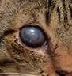
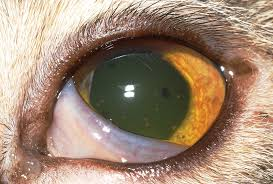
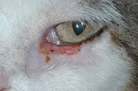
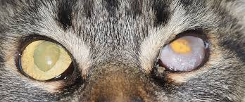

Below is a detailed summary of the test results, including individual performance metrics for each image.
| # | Image | Name | Extension | Size | Delay | Status |
|---|---|---|---|---|---|---|
| 1 |
|
cat_face10_cropped | jpg | 87.38 KB | 1581 ms | ✅ 200 |
| 2 |
|
cat_face11 | jpeg | 8.49 KB | 1423 ms | ✅ 200 |
| 3 |
|
cat_face11_cropped | jpeg | 2.29 KB | 928 ms | ✅ 200 |
| 4 |
|
cat_face15 | jpeg | 5.11 KB | 1644 ms | ✅ 200 |
| 5 |
|
cat_face15_cropped | jpeg | 1.68 KB | 1031 ms | ✅ 200 |
| 6 |
|
cat_face16 | webp | 24.42 KB | 2852 ms | ✅ 200 |
| 7 |
|
cat_face16_cropped | jpeg | 18.54 KB | 999 ms | ✅ 200 |
| 8 |
|
cat_face17_cropped | jpeg | 5.85 KB | 884 ms | ✅ 200 |
| 9 |
|
cat_face18 | jpeg | 5.98 KB | 926 ms | ✅ 200 |
| 10 |
|
cat_face18_cropped | jpeg | 1.50 KB | 1034 ms | ✅ 200 |
| 11 |
|
cat_face19_cropped | jpeg | 3.37 KB | 690 ms | ✅ 200 |
| 12 |
|
cat_face20 | jpeg | 7.54 KB | 964 ms | ✅ 200 |
| 13 |
|
cat_face20_cropped | jpeg | 4.58 KB | 828 ms | ✅ 200 |
| 14 |
|
cat_face3 | jpeg | 5.97 KB | 1939 ms | ✅ 200 |
| 15 |
|
cat_face3_cropped | jpeg | 1.66 KB | 828 ms | ✅ 200 |
| 16 |

|
cat_face4_cropped | jpg | 3.38 KB | 838 ms | ✅ 200 |
| 17 |
|
cat_face6 | jpeg | 8.73 KB | 1203 ms | ✅ 200 |
| 18 |
|
cat_face6_cropped | jpeg | 2.96 KB | 936 ms | ✅ 200 |
| 19 |
|
cat_face7_cropped | png | 120.32 KB | 1439 ms | ✅ 200 |
| 20 |
|
close_cat0 | jpeg | 12.73 KB | 990 ms | ✅ 200 |
| 21 |
|
close_cat1 | jpeg | 11.68 KB | 1153 ms | ✅ 200 |
| 22 |
|
close_cat2 | jpeg | 8.59 KB | 1031 ms | ✅ 200 |
| 23 |

|
close_cat4 | jpeg | 11.27 KB | 1574 ms | ✅ 200 |
| 24 |
|
close_cat5 | webp | 94.58 KB | 2887 ms | ✅ 200 |
| 25 |

|
close_cat7 | jpeg | 7.11 KB | 1071 ms | ✅ 200 |
| 26 |
|
close_cat8 | jpeg | 5.53 KB | 1052 ms | ✅ 200 |
| 27 |
|
close_cat_eyes | webp | 40.41 KB | 3388 ms | ✅ 200 |
| 28 |
|
close_cat_eyes2 | jpeg | 9.98 KB | 1121 ms | ✅ 200 |
| 29 |
|
cat_face1 | jpeg | 96.33 KB | 1713 ms | ❌ 400 |
| 30 |
|
cat_face10 | jpg | 318.87 KB | 1543 ms | ❌ 400 |
| 31 |
|
cat_face12 | jpg | 205.97 KB | 6367 ms | ❌ 400 |
| 32 |
|
cat_face12_cropped | jpg | 91.89 KB | 2720 ms | ❌ 400 |
| 33 |
|
cat_face13 | webp | 50.74 KB | 1540 ms | ❌ 400 |
| 34 |
|
cat_face13_cropped | jpeg | 23.77 KB | 804 ms | ❌ 400 |
| 35 |
|
cat_face14 | webp | 53.97 KB | 1642 ms | ❌ 400 |
| 36 |
|
cat_face14_cropped | jpeg | 39.56 KB | 761 ms | ❌ 400 |
| 37 |
|
cat_face17 | webp | 26.07 KB | 945 ms | ❌ 400 |
| 38 |
|
cat_face19 | jpeg | 10.95 KB | 623 ms | ❌ 400 |
| 39 |
|
cat_face1_cropped | jpeg | 18.48 KB | 516 ms | ❌ 400 |
| 40 |
|
cat_face2 | jpeg | 13.24 KB | 526 ms | ❌ 400 |
| 41 |
|
cat_face21 | jpg | 1419.28 KB | 842 ms | ❌ 500 |
| 42 |
|
cat_face21_cropped | jpg | 103.96 KB | 1438 ms | ❌ 400 |
| 43 |
|
cat_face21_cropped_2 | jpg | 55.94 KB | 1136 ms | ❌ 400 |
| 44 |
|
cat_face2_cropped | jpeg | 2.38 KB | 524 ms | ❌ 400 |
| 45 |
|
cat_face4 | jpg | 28.18 KB | 836 ms | ❌ 400 |
| 46 |
|
cat_face5 | jpeg | 6.03 KB | 498 ms | ❌ 400 |
| 47 |
|
cat_face5_cropped | jpeg | 1.94 KB | 524 ms | ❌ 400 |
| 48 |
|
cat_face7 | png | 772.83 KB | 2729 ms | ❌ 400 |
| 49 |
|
cat_face8 | jpg | 96.02 KB | 904 ms | ❌ 400 |
| 50 |
|
cat_face8_cropped | jpg | 12.12 KB | 550 ms | ❌ 400 |
| 51 |
|
cat_face9 | jpeg | 6.52 KB | 521 ms | ❌ 400 |
| 52 |
|
cat_face9_cropped | jpeg | 1.72 KB | 549 ms | ❌ 400 |
| 53 |
|
close_cat3 | webp | 20.01 KB | 628 ms | ❌ 400 |
| 54 |
|
close_cat6 | jpg | 16.13 KB | 588 ms | ❌ 400 |
| 55 |
|
close_cat9 | jpeg | 12.16 KB | 508 ms | ❌ 400 |
| 56 |

|
close_cat_eyes3 | jpeg | 14.30 KB | 543 ms | ❌ 400 |
| 57 |
|
close_dog1 | jpg | 53.21 KB | 1292 ms | ❌ 400 |
| 58 |
|
close_dog2 | jpeg | 8.54 KB | 669 ms | ❌ 400 |